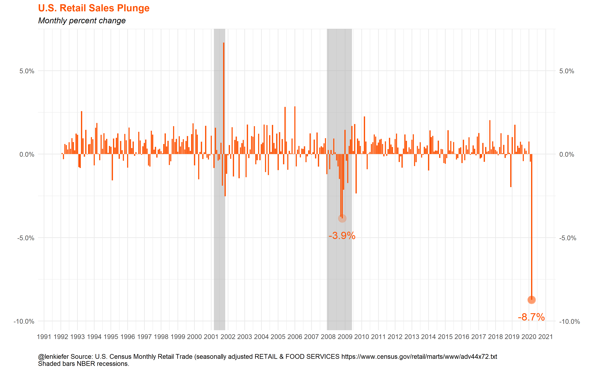

The past week we started to get monthly economic data from March, after the U.S. economy shut down to battle the COVID-19 pandemic. The results were sobering.
We already knew the US labor market was in a tough spot. But last week we got data for housing starts and retail sales which showed the size of the economic contraction.
Below are some charts I posted to Twitter last week.
Jobless claims
Jobless claims are released Thursday mornings. Over 20 million claims have been filed over the last four weeks.
From the end of the Great Recession through March the US economy added a little over 20 million jobs. So in the past 4 weeks we have nearly eliminated all the job gains from a decade. Hopefully when the economy opens up the recovery will be swift, but the short term is hard to process.
Retail Sales
With most U.S. states under lockdown, retails sales were due for a fall. However, the monthly decline in sales from February to March 2020, 8.7 percent, exceeded most forecasts.

Housing Market Response
The US housing market is also feeling the impact.
Typically in springtime, non-seasonally adjusted home purchase mortgage applications rise as the housing market heats up. But home purchase applications have started to decline, falling about 30% from a year ago.
Housing starts have also fallen. After gaining momentum in the second half of 2019, starts have stalled.
All together these data paint a bleak short-term picture for the U.S. economy. For many series the sudden reversal or extreme movement is far outside of any recent historical precedent. Follow me on Twitter for real time updates.